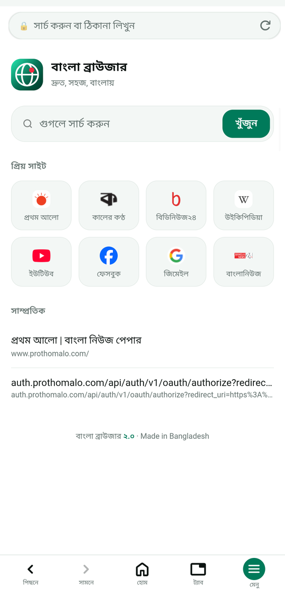
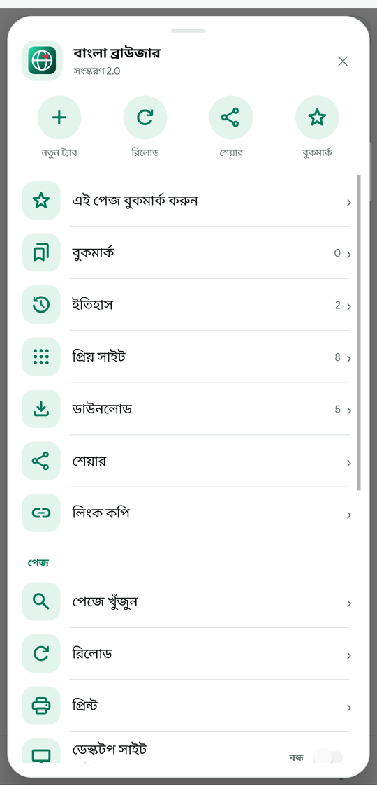
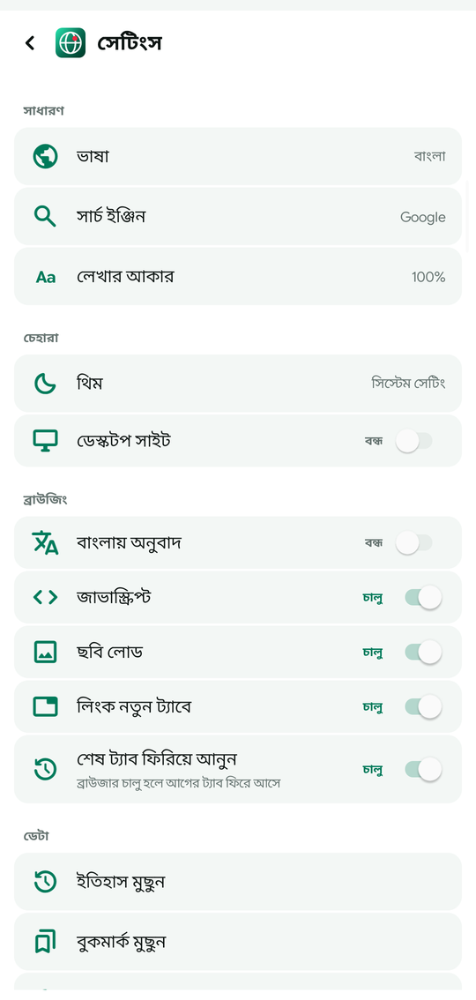
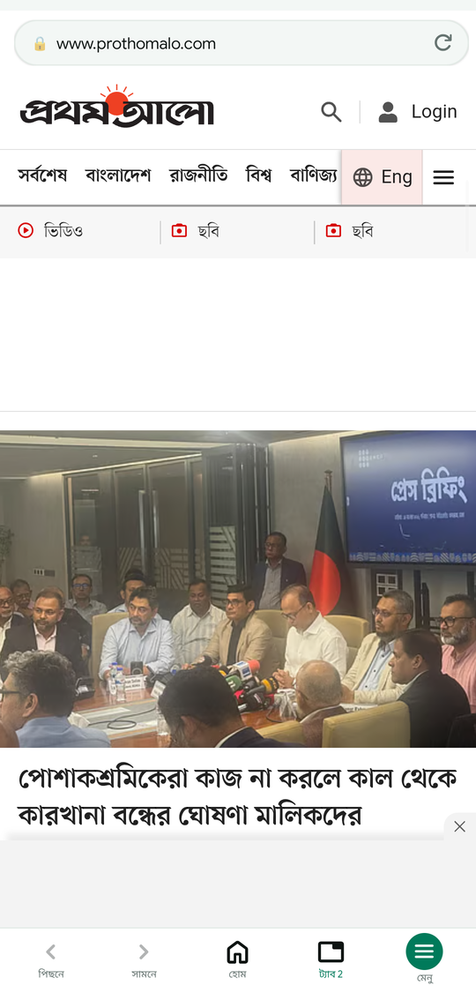
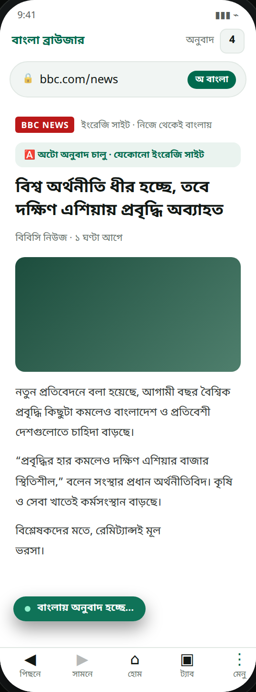

বাংলা ব্রাউজার
দ্রুত, হালকা, পুরোটাই বাংলায়
বাংলা পাঠকের জন্য বানানো ফ্রি অ্যান্ড্রয়েড ব্রাউজার — আর এখন যেকোনো ইংরেজি পেজ নিজে থেকেই বাংলায় হয়ে যায়। ট্যাব, বুকমার্ক, ইতিহাস, রাতের মোড, ডাউনলোডার — সব একসাথে। বিজ্ঞাপন নেই, ট্র্যাকিং নেই।
ইংরেজি সাইটও এখন বাংলায়, নিজে থেকেই
যেকোনো ইংরেজি ওয়েবসাইট খুললেই লেখা আপনা-আপনি বাংলায় বদলে যায়। আলাদা করে কিছু চাপতে হয় না, অন্য অ্যাপও লাগে না। লেখা ধাপে ধাপে বদলায়, তাই পেজ আটকে থাকে না। চাইলে মেনু থেকে এক ট্যাপে বন্ধ করা যায়, আবার সেটিংস থেকেও।
অ্যাপের ভেতরে
হোম পেজ, মেনু, সেটিংস, অ্যাপ সম্পর্কে আর অটো অনুবাদ — এক নজরে।





বাংলা ব্রাউজার ১.২.১ · Android · ছোট স্ক্রিনে পাশে সোয়াইপ করো
কী কী আছে
দৈনন্দিন ব্রাউজিংয়ের জন্য যা দরকার, অপ্রয়োজনীয় কিছু ছাড়া।
অটো বাংলা অনুবাদনতুন
ইংরেজি পেজ খুললেই লেখা বাংলায়। ডিফল্টে চালু, চাইলে বন্ধ — এক ট্যাপে।
সম্পূর্ণ বাংলা
প্রতিটি বাটন, মেনু আর বার্তা বাংলায়। ইংরেজি জানা না থাকলেও চালানো যায়।
৩২টা পর্যন্ত ট্যাব
Chrome-এর মতো ট্যাব সুইচার। উপরের সংখ্যায় চাপ দিলেই সব ট্যাবের তালিকা।
বুকমার্ক ও ইতিহাস
পছন্দের পেজ সেভ থাকে ফোনেই। এক ট্যাপে পুরোনো ইতিহাসে ফেরা যায়।
থিম ও রাতের মোড
থিমের তিনটে অপশন — ফোনের সেটিং অনুযায়ী, সবসময় রাতের মোড, বা জোর করে সব কালো। রাতের মোডে যে সাইট নিজেই ডার্ক সাপোর্ট করে (উইকিপিডিয়া, ইউটিউব) তারা নিজের থিমেই আসে।
সেটিংস
সার্চ ইঞ্জিন, লেখার আকার, জাভাস্ক্রিপ্ট, ছবি লোড — সব নিজের মতো সেট করা যায়।
নিজস্ব ডাউনলোডার
কুকি আর ব্রাউজারের পরিচয় পাঠায়, তাই যেসব সাইট আগে ফাইল দিত না তারাও দেয়। লাইভ স্পিড, শতাংশ আর বাতিল বাটন।
প্রিয় সাইট নিজের মতো
হোম পেজের সাইটগুলো নিজে যোগ, মুছে বা সাজানো যায় — প্রতিটার আসল আইকনসহ।
পূর্ণ ইতিহাস
পুরো স্ক্রিনের তালিকা, প্রতিটা পেজের আসল আইকন আর ছোট নাম। ২০০টা এন্ট্রি জমা থাকে।
ইনস্টল করবেন যেভাবে
Play Store লাগবে না। ফোনে সরাসরি APK ইনস্টল করা যায়।
APK নামাও
উপরের ডাউনলোড বাটনে চাপ দিয়ে ফোনের Downloads ফোল্ডারে ফাইলটা রাখো।
ফাইলে ট্যাপ করো
ফাইল ম্যানেজার খুলে BanglaBrowser-1.2.1.12.apk-তে ট্যাপ করো।
Install চাপো
Android অচেনা সোর্সের অনুমতি চাইলে "Allow" দাও, তারপর Install।
পুরোনো ভার্সন থাকলে মুছতে হবে না। নতুন APK পুরোনোটার উপর বসবে, বুকমার্ক আর ইতিহাস অটুট থাকবে।
Play Store-এর বাইরের APK-তে Android মাঝে মাঝে স্ক্যান করতে বলে। এটা অ্যাপের দোষ নয়।
১. Scan চাপো, ইন্টারনেট থাকলে কয়েক সেকেন্ডে শেষ হয়।
২. তারপর Install চাপো।
৩. "Unsafe app blocked" এলে More details → Install anyway।
প্রতিবার না চাইলে: Play Store → Play Protect → ⚙ → Scan apps with Play Protect বন্ধ করো। শুধু নিজের ফোনে প্রযোজ্য।
সাধারণ প্রশ্ন
ইনস্টল আর ব্যবহার নিয়ে যা সবচেয়ে বেশি জিজ্ঞাসা করা হয়।
ইংরেজি সাইট কি বাংলায় পড়া যায়?
হ্যাঁ। এটাই ১.২.১-এর সবচেয়ে বড় নতুন জিনিস। যেকোনো ইংরেজি পেজ খুললে লেখা নিজে থেকেই বাংলায় বদলে যায় — ডিফল্টে চালু থাকে। বন্ধ করতে: মেনু (⋮) → বাংলায় অনুবাদ, অথবা সেটিংস → ব্রাউজিং → বাংলায় অনুবাদ। আবার চালু করলে পেজ রিলোড হয়ে বাংলায় আসবে।
বাংলা ব্রাউজার কি ফ্রি?
হ্যাঁ। কোডটা MPL-2.0 লাইসেন্সে ওপেন সোর্স। বিজ্ঞাপন নেই, ট্র্যাকিং নেই, ইন-অ্যাপ কেনাকাটাও নেই।
ফোনে কোনো তথ্য পাঠায় কি?
না। কোনো অ্যানালিটিক্স নেই। বুকমার্ক, ইতিহাস আর সেটিংস শুধু তোমার ফোনেই থাকে।
কোন Android ভার্সনে চলবে?
Android 5.0 (API 21) আর তার পরের সব ভার্সনে।
সোর্স কোড কি সবার জন্য খোলা?
হ্যাঁ। কোড GitHub-এ MPL-2.0 লাইসেন্সে প্রকাশিত। কেউ কোড দেখতে, ব্যবহার করতে বা বদলাতে পারে; বদলানো ফাইলও একই লাইসেন্সে খোলা রাখতে হবে, তাই কেউ কোডটা বন্ধ করে নিজের বলে চালাতে পারবে না। অ্যাপের নাম ও আইকন আলাদা, সেগুলো কেউ ব্যবহার করতে পারবে না।
ইনস্টলে Play Protect স্ক্যান চায় কেন?
ফাইলটা Play Store থেকে আসেনি, আর অ্যাপটার সাইনিং কী Google-এর কাছে নতুন। একবার ইনস্টল হলে পরের আপডেটগুলো সাধারণত চুপচাপ বসে যায়। স্ক্যান চাইলে Scan চেপে Install দাও, কোডটা GitHub-এ খোলা, কেউ লুকিয়ে কিছু চালাতে পারবে না।
আপডেট করলে বুকমার্ক হারাবে?
না। একই সাইনিং কী দিয়ে সাইন করা, তাই নতুন APK পুরোনো অ্যাপের উপর ইনস্টল হয় আর ডেটা থাকে।